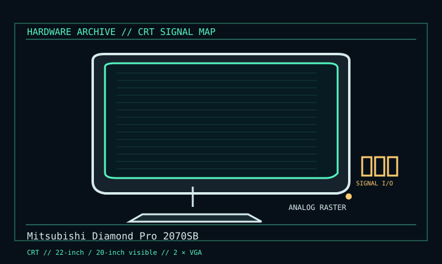

[ INDIVIDUAL COMPONENT // DISPLAYS ]
Mitsubishi Diamond Pro 2070SB
22-inch SuperBright Diamondtron professional monitor, circa 2001. CRT

IDENTIFICATION: Verify the complete model/revision on the rear label. Specifications are tied to the cited manual/specification; variant-dependent values are qualified rather than generalized.
Specifications
| Catalog subcategory | Crt Displays |
|---|---|
| Exact product/family | Mitsubishi Diamond Pro 2070SB |
| Era | 22-inch SuperBright Diamondtron professional monitor, circa 2001. |
| Tube / image | 22-inch Diamondtron aperture grille (20-inch viewable), 0.24 mm grille pitch; optimum 1600 × 1200 at 85 Hz. |
| Modes / scan | Maximum 2048 × 1536 at 86 Hz; horizontal 30–140 kHz, vertical 50–160 Hz within supported timings. |
| Inputs | Two 15-pin Mini D-sub analog RGB inputs; USB 2.0 hub is data, not video. |
| Power / mechanical | 117 W typical; 100–120 / 220–240 V AC, 50/60 Hz; approx. 30 kg; 495 × 484.5 × 471 mm. Confirm unit label and stand. |
Revision, signal & host compatibility
Requires analog VGA/RGB source and supported timing. Digital-only GPU needs an active converter; passive DVI/HDMI cable cannot supply analog RGB. Check rear input selection and regional mains label.
Match source signal type, sync/timing, connector pinout, bandwidth and power path to this exact display. Physical connector fit alone does not establish electrical or timing compatibility.
Preservation & repair notes
Transport upright with two-person handling. Inspect grille/coating, geometry, convergence, degauss and USB hub. Store settings and use exact Mitsubishi/NEC service source; CRT internal work is qualified high-voltage service.
Record model suffix, serial/date label, accessories, image condition, configuration, source document and repair history. CRT high-voltage, LCD backlight and OLED panel risks require appropriate service training and the correct manual.
Manufacturer manuals & references
- Mitsubishi Diamond Pro 2070SB User ManualModel manual with timing, electrical and physical specifications.
- Mitsubishi 2070SB — CRT DatabaseModel identification cross-reference.